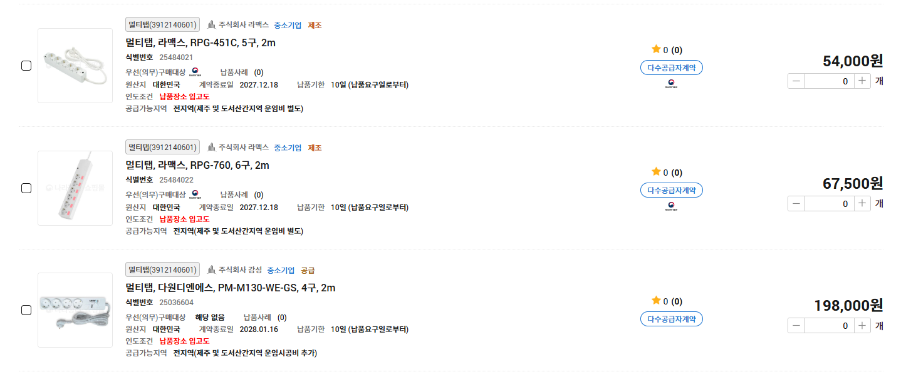
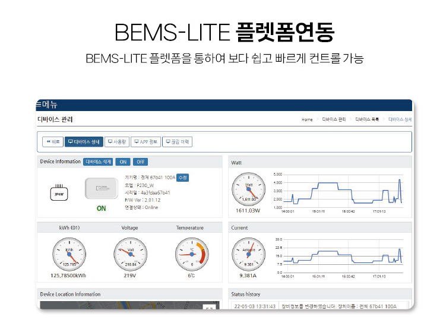

회사에서 잠깐 시간 붕 떠서 아까 본 조달청 내용 생각나 찾아봄.
원글 - https://www.dogdrip.net/729782285
일단 기사에 나온 조달청 나라장터 들어가서 멀티탭으로 검색해서 가격을 한 번 봄.

진짜 20만원짜리가 있네?
제품 로고에 Wenergy라는 회사 이름이 붙어있어서 검색해 봄.
똑같은 제품을 찾았다!
https://smartstore.naver.com/airgamsung/products/8751067124 - 네이버스토어 링크
습... 제품이 뭐가 다르지? 한 번 훑어볼까...
IoT 기능이 들어갔고... 음? BEMS-LITE 연동이 된다고?

BEMS-lite 연동이 뭔데?
Building energy management system 이라고 건물 에너지 관리하는 시스템임.
이거 연동하려면 API 정보도 받아서 별도 FW 개발비도 들어가고, 테스트도 하고, 이게 일반 소비자용으로는 소비처가 없다보니까 대량생산이 안되서 제품 단가도 올라갈 수밖에 없음.
그럼 기사에 나온 57,200원짜리 멀티탭은 뭔가?
https://smartstore.naver.com/pmshop/products/2620980314
저 멀티탭의 일반 소비자용 IoT 버전임.
그냥 이거 쓰면 안되나? 싶겠지만, 우리나라 공공기관이 이런 부분은 또 꼼꼼해서 구글, 삼성, LG, 애플 등 외부 서버에 제품 정보 연동해서 쓰면 안됨.
즉, 20만원짜리 멀티탭은 BEMS 플랫폼과 연동하는 특별버전으로 개발된 특수목적 제품이라 20만원 충분히 할 수 있음.
이런 속사정은 하나도 안 알아보고 그냥 똑같이 생긴 멀티탭이 있는데 이건 5만원대, 얜 20만원대니까 4배 뻥튀기에요! 라고 하는건 정말 악의적인 기레기 기사다~ 라고 할 수 있음.
선동에 대한 반박은 개추를 주지도 않고, 많은 노력이 필요하지... 여기 정치병ㅈ들 겁나 많거든